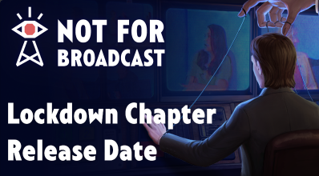
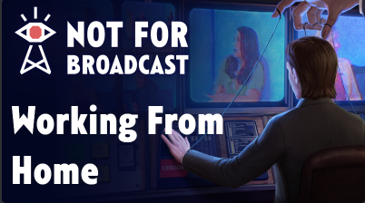

Countdown to new content
The exact time is not confirmed so we are making a guess of 12am BST
News | Click to find out more

The following website is made by a community member with far too much time due to being locked into one room because of COVID19. The following website looks shit because this is programmer art. You would be optimistic in thinking I can do the art thing. However, if you also have far too much free time and good at the art thing you are very welcome to steal the open-source code and make it look like Andy (A Dev) in the clown costume. Have fun finding that scene in Not For Broadcast. TBH there are so many easter eggs in the game. Honestly, I am surprised there is no achievement for finding them all. There is like a Fuck tun of them in the game. Its video game easter egg galore. If it was Easter the Easter bunny would have a 10-foot ass hole from all the Easter eggs it's had to shat out to put in the game. Oww, I probably should have said that this is not very family-friendly earlier. Ow well fuck it; there are Nude pixelated people in the game so it's not my fault if you are underage or didn't what the image of the easter bunny with a 10-foot ass hole in your head.